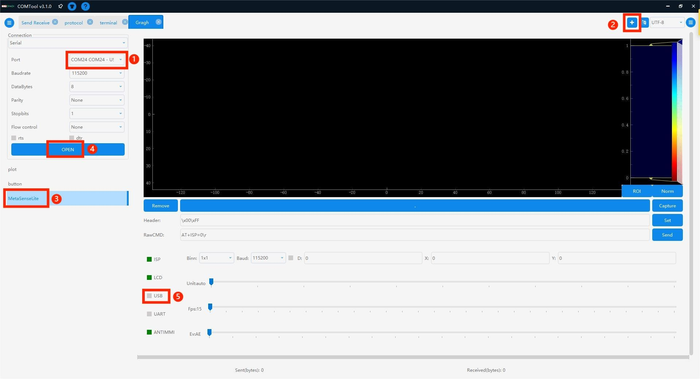
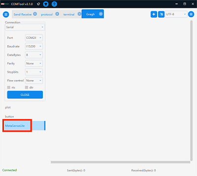
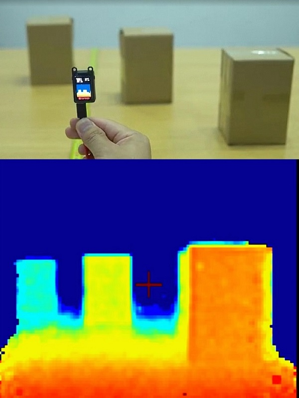
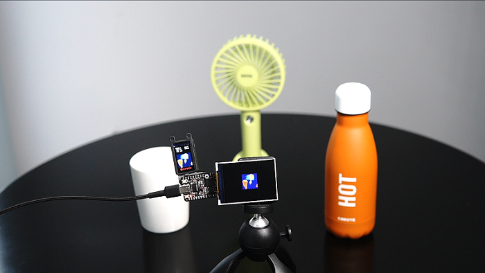
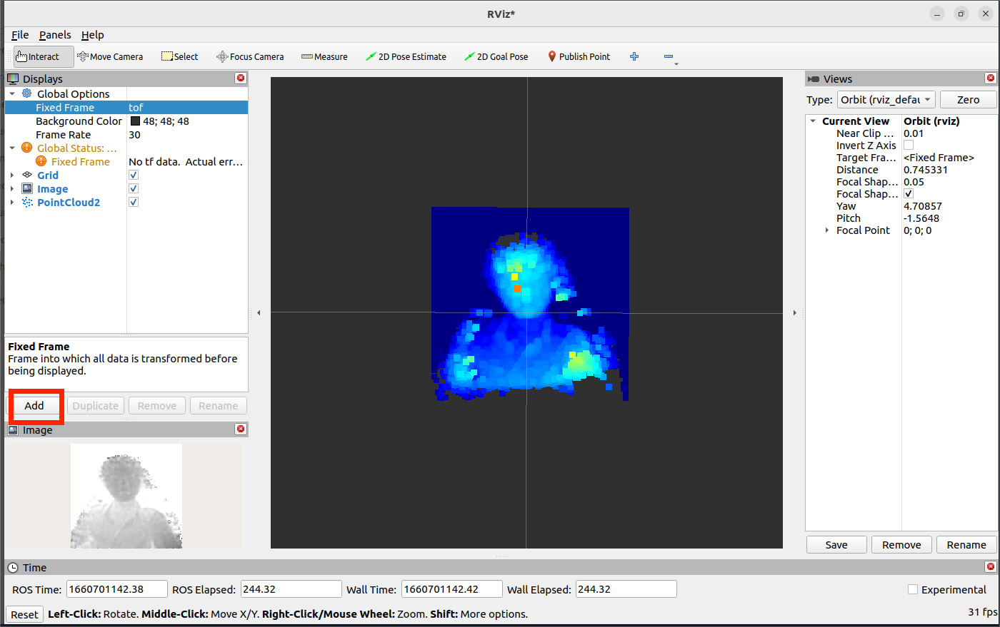
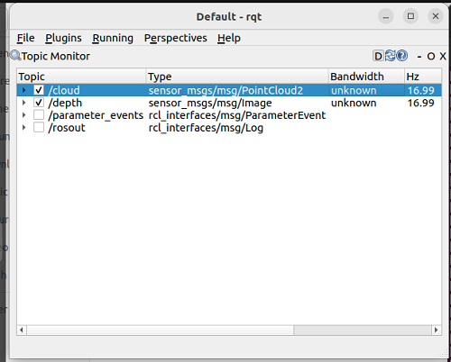

MetaSense-A010
产品概述

MetaSense-A010 是由 Sipeed 所推出的一款由 BL702 + 炬佑 100x100 TOF 所组成的极致性价比 3D 传感器模组，最大支持 100x100 的分辨率和 8 位精度，并且自带 240×135 像素的 LCD 显示屏来实时预览 colormap 后的深度图 。
资料汇总
硬件资料：点击查看下载
产品开箱指南
准备工作
这款设备采用串口协议对外提供接口和传输数据，物理接口对外提供了 type-c（虚拟串口）及 1.0mm 的 4pin 母座（UART）都能获取深度图数据用于集成。
产品接线说明
通过 type-c 接口连接电脑后，可以识别到 /dev/ttyUSBx（Linux）或COMx（Windows）。

还可通过 usb2ttl 模组按照硬件引脚图连接 4pin 母座。
硬件引脚图：屏幕正面朝下


| MS-A010 | TX | RX | GND | 5V |
| usb2ttl 模块 | RX | TX | GND | 5V |
COMTOOL 软件包
Windows 系统连接：点击查看软件包
Linux 系统：不提供软件包，需用户自行编译点击跳转。
注意：Win 7 及以下系统需装驱动，可自行前往 FTDI 官网下载。
上电互动预览
将设备通电后，可在设备上自带 LCD 屏实时预览 color map 后的深度伪彩图。

PC 互动预览
- 打开 COMTOOL 软件后，如果软件上方无 Graph 的话，可在右上角 + 号处添加 Graph 。
- 左侧选择 Port 和对应波特率（任意选择高波特率），选择 MaixSenseLite 后点击 open 再勾选下方 USB 即可接收大量数据。

3. 设定 Header 为 \x00\xFF 即可正确解析图像数据并观察到深度图，可以直观感受二维平面图像上的深度。

互动配置说明
COMTOOL 上位机的配置控件说明
- Header 设置识别包头
- RawCMD 用户可以手动发送指令（USB 和 UART 串口行为相同）
- ISP 启动停止
- LCD 显示自带屏的开启关闭
- USB 串口传输深度图开启关闭
- UART 串口传输深度图开启关闭
- ANTIMMI 自动抗多机干扰开启关闭（易受干扰，关闭的效果都要更好些）
- Binn 可下拉设置 BINNING，Baud 设置 UART 波特率
- X、Y 设置坐标：D 左侧多选框开启后显示出该摄像头的距离。
- Unit 设置量化单位（16位量化到8位，比例缩小，设置太小的话会只能看清很近处的影像）
- FPS 设置出图帧率（不宜过高，根据对接设备的性能合理设置即可，减小帧率可以减少传输数据量）
- Ev 曝光间隙控制（最左代表 AE，其他是固定曝光时间）
案例：远近中物体实拍
物体之间放置的距离形成深度值的差异，模块捕捉到差异后显示冷暖色，距离近时显示暖色而远则显示冷色。

案例：检测人流
高精度，大分辨率的实时监测人流走动的情况并统计。

案例：键盘灯跟随
实现超酷炫的键盘灯跟随，实时跟踪手部的位置，再根据手部的位置映射键盘灯。
相关支持：代码获取。

案例：接入 MCU
- MS-A010 拥有强大的兼容性，可基于串口协议外接 K210 bit 这样的单片机开发板或树莓派之类的 linux 开发板来进行二次开发。
- k210 Bit 开发板是 sipeed Maix 中产品线的一员，基于嘉楠堪智科技的边缘智能计算芯片 K210 (RISC-V 架构 64位双核) 设计的一款 AIOT 开发板。
点击了解 K210 Bit
MS-A010 外接 K210 bit 源码获取

二次开发：串口协议
MS-A010 二次开发手册：点击查看
可参考上方的案例：MS-A010 外接 K210 bit
二次开发：接入 ROS
接入 ROS1
1. 准备工作
首先，准备适用的环境：Linux 系统
可使用虚拟机 virtual box 或者 vmware 也可安装双系统，安装方法请自行查询。
2. 安装运行
由于我们提供的是 ROS2 的接入功能包，运行 ROS1 的话只需切换分支即可。
接入功能包：点击下载
#解压缩sipeed_tof_ms_a010.zip，并进入目录
git switch ros1 #切换到ros1分支
source /opt/ros/*/setup.sh
catkin_make
source devel/setup.sh
rosrun sipeed_tof_ms_a010 a010_publisher _device:="/dev/ttyUSB0"
#之后终端会持续刷新显示[sipeed_tof]: Publishing，即正常工作
3. 可自行在 RQT 查看帧率
4. RVIZ2 预览
打开 rviz2 后，在界面左下角的 Add->By topic->PointCloud2或/depth ->Image 添加 ->Display/Global Options/Fixed Frame 需要修改成 tof，才能正常显示点云，根据添加的内容，左侧会显示 Image 而中间则显示点云。

接入 ROS2
1. 准备工作
首先，准备适用的环境：Linux 系统
可使用虚拟机 virtual box 或者 vmware 也可安装双系统，安装方法请自行查询。
2. 安装运行
我们提供了 ROS2 的接入功能包，用户需要在运行 ROS2 的系统上编译安装。
接入功能包：点击下载
#解压缩 sipeed_tof_ms_a010.zip，并进入目录
source /opt/ros/*/setup.sh
colcon build #如提示缺少colcon时需要sudo apt install python3-colcon-ros
ros2 run sipeed_tof_ms_a010 publisher --ros-args -p device:="/dev/ttyUSB0"
source install/setup.sh
#之后终端会持续刷新显示[sipeed_tof]: Publishing，即正常工作。
3. RQT 查看帧率

4. RVIZ2 预览
打开 rviz2 后，在界面左下角的 Add->By topic->PointCloud2或/depth ->Image 添加 ->Display/Global Options/Fixed Frame 需要修改成 tof，才能正常显示点云，根据添加的内容，左侧会显示 Image 而中间则显示点云。